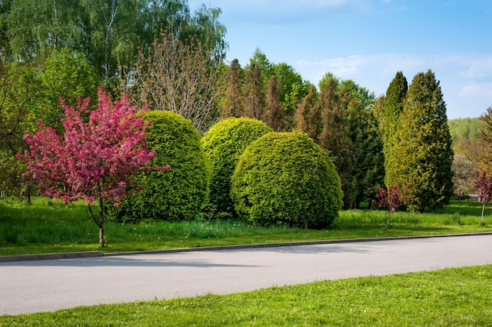

Decides que no vale la pena el riesgo. La carnada es tentadora pero las lecciones de tu cuidadora resuenan en tu mente. Hay otras formas de conseguir comida sin jugarte la libertad.
Te alejas del estanque y sigues explorando. Después de caminar un rato, encuentras un claro lleno de arbustos con bayas. No es carne, pero es alimento seguro.
Mientras comes, escuchas sonidos de pequeños roedores cerca. Este lugar tiene presas potenciales. Podrías quedarte aquí y aprender a cazar.
También notas que hay cuevas naturales en las rocas cercanas. Sería un buen lugar para establecer un hogar. Alejado de humanos, con comida disponible, y refugio seguro.